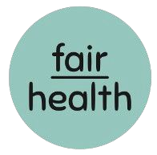

Medicina preventiva in companyO problema
É como a empresa recebe o colaborador e, na sequência, como lida com o diagnóstico.
70% dos custos do plano de saúde corporativo vêm de doenças crônicas evitáveis.
Hipertensão, diabetes tipo 2, obesidade, burnout. Aparecem primeiro na sinistralidade, antes de aparecerem no afastamento.
Fonte: Revista de Saúde Pública da USP, citada em fairjob.com.br/fairhealth.
O produto · Escritório do Cuidado
Médico e psicológico, in company.
Médicos, psicólogos, assistentes sociais e felicitologistas.
7 pilares e um plano individual.
Anonimizados, no painel fairdata.
Por que dentro da empresa?
A proximidade aumenta a adesão. A adesão gera resultado, com registro e rastreabilidade para a NR-1.
Metodologia
Mês 1. Perfil de saúde via fairdata e prioridades por evidência.
Mês 1 a 12. Atendimento individual e Plano Individual do Cuidado.
Mês 1 a 12. Letramento e workshops nos 7 pilares.
Mês 12. Relatório de impacto em sinistralidade para o CFO.
Fale com a fairhealth